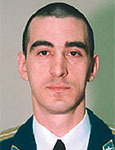

Lyndon B. Johnson Space Center
Houston, Texas 77058
|
National Aeronautics and Space Administration Lyndon B. Johnson Space Center Houston, Texas 77058 |
 |
Biographical Data |
||
ANATOLY ALEKSEYEVICH IVANISHIN
(LIEUTENANT COLONEL, RUSSIAN AIR FORCE)
SOYUZ TMA BACKUP COMMANDER
ISS FLIGHT ENGINEER
RSC ENERGIA TEST-COSMONAUT
PERSONAL DATA: Born January 15, 1969 in Irkutsk, Russia. Married to Svetlana Ivanishin. They have one son, Vladislav, born in 1993.
EDUCATION: In 1986, Ivanishin finished secondary school education from Irkutsk. He entered the Irkutsk Polytechnic Institute, and in 1987 completed his first year. Ivanishin entered the Chernigov Higher Military Aviation School in 1987, and in 1991 graduated with honors. In 2003, Ivanishin graduated from the Moscow State University in Economics, Statistics and Information Theory.
EXPERIENCE: Since 1991 Ivanishin has served in combatant units of the Russian Air Force. After graduating from the Chernigov Higher Military Aviation School, he served in the Borisoglebsk military unit, Voronezh region, where Ivanishin flew MiG-29 jet fighter planes. Since 1992, he served as a senior fighter pilot in the 159 aviation regiment based in Petrozavodsk, Karelia. During the service he flew Su-27 jet fighter aircraft. He has logged 507 hours of flying time and has successfully made 180 parachute jumps.
SPACEFLIGHT EXPERIENCE: In May 2003, Ivanishin was selected as a cosmonaut candidate. From May 2003 through June 2005, he completed basic spaceflight training. In July 2005, he was qualified as a test cosmonaut.
Currently, Ivanishin serves as the Soyuz TMA-20 backup commander, a mission to the International Space Station expected to launch in December 2010 where he will serve as a flight engineer for Expedition 29/30.
JULY 2011